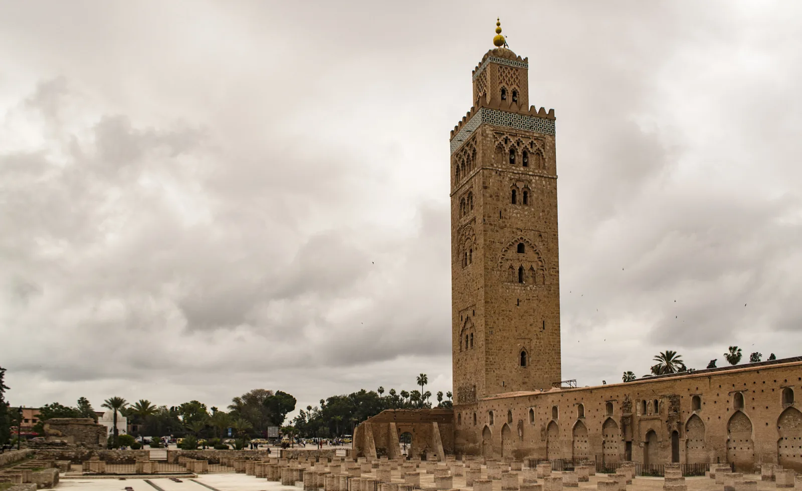
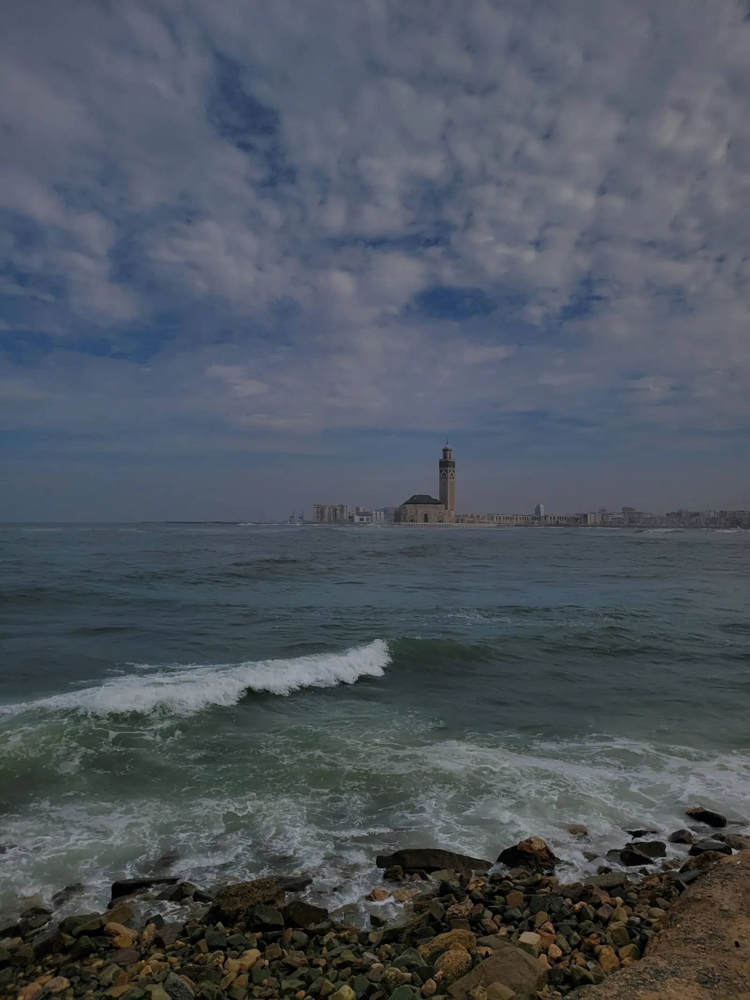

Accueil › Blog › Les mosquées du Maroc : de la doyenne de Fès aux prouesses de Casablanca
Maghreb · 6 min de lecture · 2026-02-16
Les mosquées du Maroc : de la doyenne de Fès aux prouesses de Casablanca
Le Maroc n'a jamais cessé de bâtir des mosquées depuis le IXe siècle, sans jamais rompre totalement avec son vocabulaire almohade (toits de tuiles vertes, arcs outrepassés, zelliges géométriques) que l'on retrouve autant dans la doyenne de Fès que dans le géant contemporain de Casablanca.


Al Quaraouiyine, une mosquée devenue université millénaire
Fondée en 859 à Fès par Fatima al-Fihriya, une riche héritière, la mosquée Al Quaraouiyine abrite l'une des plus anciennes institutions d'enseignement encore en activité au monde, reconnue comme telle par l'UNESCO et le Livre Guinness des records. Agrandie sur plus d'un millénaire, elle conserve un plan hypostyle typique des débuts de l'architecture mosquée nord-africaine, avec cour à bassins et salle de prière profonde soutenue par des arcades en fer à cheval.
L'empreinte almohade : la Koutoubia comme modèle
Aux XIIe et XIIIe siècles, la dynastie almohade impose dans tout le Maghreb et al-Andalus un vocabulaire commun : minaret carré massif, décor d'arcs entrelacés en pierre sculptée, toiture de tuiles vertes vernissées. La Koutoubia de Marrakech en est l'exemple le plus abouti, et son influence se lit directement dans la Giralda de Séville ou la tour Hassan de Rabat, bâties à la même époque par les mêmes ateliers.
Tin Mal, le sanctuaire fondateur dans l'Atlas
Loin des grandes villes, la mosquée de Tin Mal, isolée dans les montagnes du Haut Atlas, marque le berceau spirituel du mouvement almohade : c'est ici que son fondateur, Ibn Toumert, établit sa base avant la conquête de Marrakech. Dépouillée d'ornements superflus, l'édifice frappe par la pureté de ses volumes et reste, huit siècles plus tard, un lieu de pèlerinage architectural pour comprendre l'origine du style almohade.
Hassan II, la synthèse contemporaine
Achevée en 1993 à Casablanca, la mosquée Hassan II reprend consciemment ce vocabulaire almohade (zelliges, plâtres ciselés, toit de tuiles vertes) à une échelle inédite, avec un minaret dépassant 200 mètres et une salle de prière au toit ouvrant, bâtie en partie sur l'océan Atlantique. Une manière d'affirmer que la tradition mosquée marocaine, huit siècles après Tin Mal, reste une architecture vivante plutôt qu'un style figé.
À découvrir
Mosquées citées dans cet article

Mosquée Hassan II
Un géant posé sur l'Atlantique : minaret de 210 mètres, toit ouvrant et artisanat marocain à son sommet.

Mosquée Koutoubia
Le minaret-phare de Marrakech, modèle de la Giralda de Séville et de la tour Hassan de Rabat.
Pour aller plus loin
Articles similaires
Coupoles et minarets : pourquoi reconnaît-on une mosquée de loin ?
D'où viennent la coupole et le minaret, les deux éléments qui rendent une mosquée reconnaissable à des kilomètres ? Histoire et rôle de ces deux symboles architecturaux.
Qu'est-ce que l'architecture islamique ? Histoire et principes fondateurs
Origines, principes et grandes périodes de l'architecture islamique : de la mosquée du Prophète aux chefs-d'œuvre ottomans, moghols et contemporains.
À propos du contenu de cette page : ce site propose un contenu éditorial et culturel rédigé avec soin et le souci du respect des traditions religieuses concernées ; il ne constitue pas un avis théologique ou une source d'autorité religieuse. Malgré nos vérifications, des erreurs, imprécisions ou approximations peuvent subsister. Si vous en repérez une, merci de nous la signaler via la page Contact ou par e-mail à qibla.mosk@gmail.com, nous la corrigerons avec gratitude.